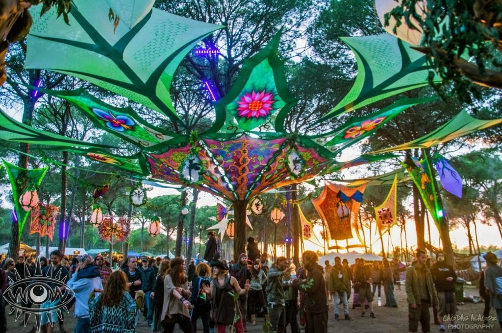

Lost Kids: Busca transmitir un mensaje a travez de la musica shows en vivo , interacciones y juegos. volver a conectar con nuestro niño interior nuestra intencion es que se vuelvan a revivir sentimientos y emociones como la inocencia,dulzura union , diversion , amor , compañerismo. las ganas de volver a ser uno todos jugando a ser niños felices , sin preocupaciones, sueltos , unidos riendo , disfrutando , simplemente viviendo el presente
